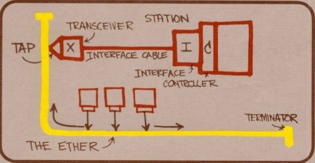

É interessante notar que uma série de pesquisas e motivações nasciam na década de 60, e que tinham em comum a idealização de uma grande rede de comunicação: a necessidade da descentralização geográfica da informação durante a Guerra Fria, as primeiras pesquisas sobre comutação de pacotes e a idealização de estudiosos (J.C.R. Licklider, do MIT) de construir uma grande rede de onde qualquer pessoa pudesse acessar arquivos e programas, são exemplos das motivações que surgiram naquela década. As primeiras redes de computadores foram criadas ainda durante a década de 60, como uma forma de transferir informações de um computador a outro. Na época, o meio mais usado para armazenamento externo de dados e transporte ainda eram os cartões perfurados, que armazenavam poucas dezenas de caracteres cada (o formato usado pela IBM, por exemplo, permitia armazenar 80 caracteres por cartão). São, literalmente, cartões de cartolina com furos, que representam os bits um e zero armazenados:

Em 1968 é criado o primeiro comutador de pacotes, chamado Interface Message Processors (IMP’s), para compor a arquitetura da ARPANet. De 1969 a 1972 foi criada a Arpanet, o embrião da Internet que conhecemos hoje. A rede entrou no ar em dezembro de 1969, inicialmente com apenas 4 nós, que respondiam pelo nomes SRI, UCLA, UCSB e UTAH e eram sediados, respectivamente, no Stanford Research Institute, na Universidade da California, na Universidade de Santa Barbara e na Universidade de Utah, nos EUA. Eles eram interligados através de links de 50 kbps, criados usando linhas telefônicas dedicadas, adaptadas para o uso como link de dados.
Esta rede inicial foi criada com propósitos de teste, com o desafio de interligar 4 computadores de arquiteturas diferentes, mas a rede cresceu rapidamente e em 1973 já interligava 30 instituições, incluindo universidades, instituições militares e empresas. Para garantir a operação da rede, cada nó era interligado a pelo menos dois outros (com exceção dos casos em que isso realmente não era possível), de forma que a rede pudesse continuar funcionando mesmo com a interrupção de várias das conexões. As mensagens eram roteadas entre os nós e eventuais interrupções nos links eram detectadas rapidamente, de forma que a rede era bastante confiável. Enquanto existisse pelo menos um caminho possível, os pacotes eram roteados até finalmente chegarem ao destino, de forma muito similar ao que temos hoje na Internet.

Em 1974 surgiu o TCP/IP, que acabou se tornando o protocolo definitivo para uso na ARPANET e mais tarde na Internet. Uma rede interligando diversas universidades permitiu o livre tráfego de informações, levando ao desenvolvimento de recursos que usamos até hoje, como o e-mail, o telnet e o FTP, que permitiam aos usuários conectados trocar informações, acessar outros computadores remotamente e compartilhar arquivos. Na época, mainframes com um bom poder de processamento eram raros e incrivelmente caros, de forma que eles acabavam sendo compartilhados entre diversos pesquisadores e técnicos, que podiam estar situados em qualquer ponto da rede. Com o crescimento da rede, manter e distribuir listas de todos os hosts conectados foi se tornando cada vez mais dispendioso, até que em 1980 passaram a ser usados nomes de domínio, dando origem ao "Domain Name System", ou simplesmente DNS, que é essencialmente o mesmo sistema para atribuir nomes de domínio usado até hoje. A segunda parte da história começa em 1973 dentro do PARC (o laboratório de desenvolvimento da Xerox, em Palo Alto, EUA), quando foi feito o primeiro teste de transmissão de dados usando o padrão Ethernet. Por sinal, foi no PARC onde várias outras tecnologias importantes, incluindo a interface gráfica e o mouse, foram originalmente desenvolvidas. O teste deu origem ao primeiro padrão Ethernet, que transmitia dados a 2.94 megabits através de cabos coaxiais e permitia a conexão de até 256 estações de trabalho. Este célebre desenho, feito por Bob Metcalf, o principal desenvolvedor do padrão, ilustra o conceito:
A taxa de transmissão de 2.94 megabits do Ethernet original era derivada do clock de 2.94 MHz usado no Xerox Alto, mas ela foi logo ampliada para 10 megabits, dando origem aos primeiros padrões Ethernet de uso geral. Eles foram então sucessivamente aprimorados, dando origem aos padrões utilizados hoje em dia. Consequentemente, A ARPANET e o padrão Ethernet deram origem, respectivamente, à Internet e às redes locais. Na década de 1990, com a abertura do acesso à Internet, tudo ganhou uma nova dimensão e as redes se popularizaram de forma assustadora, já que não demorou muito para todos perceberem que ter uma rede local era a forma mais barata de conectar todos os micros da rede à Internet.